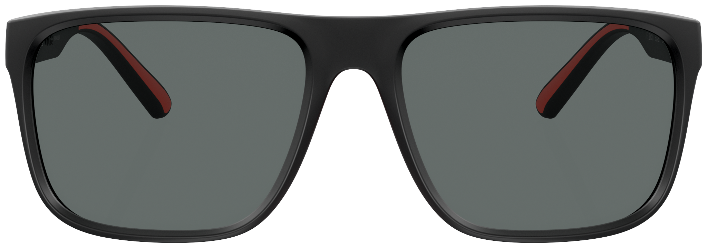
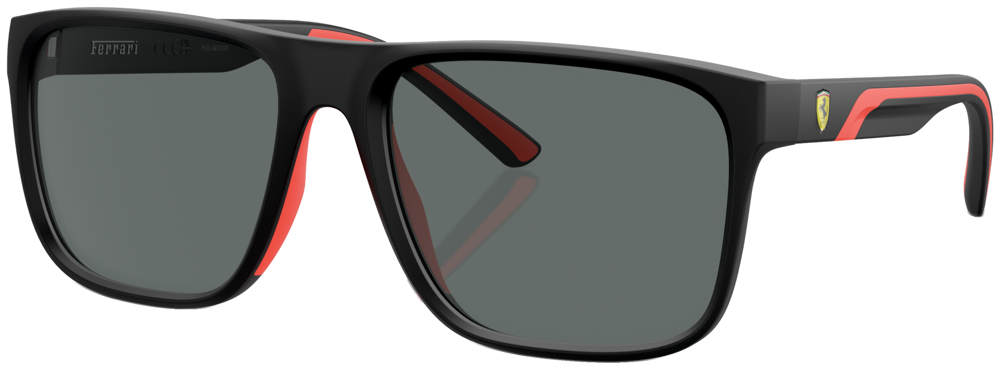
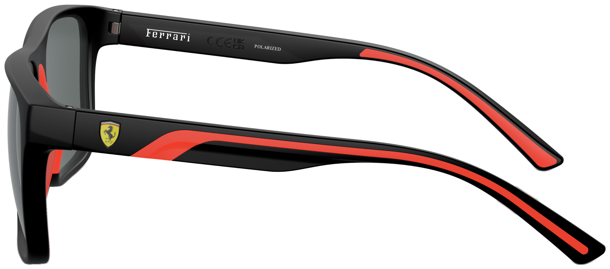
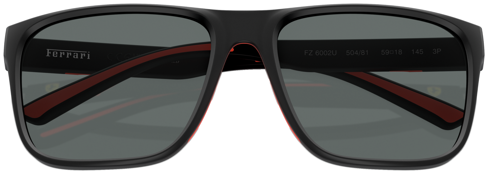
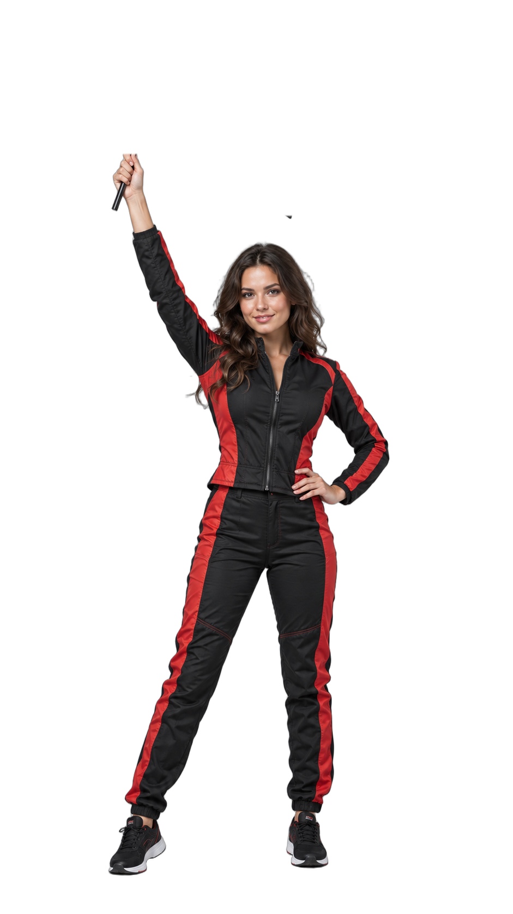
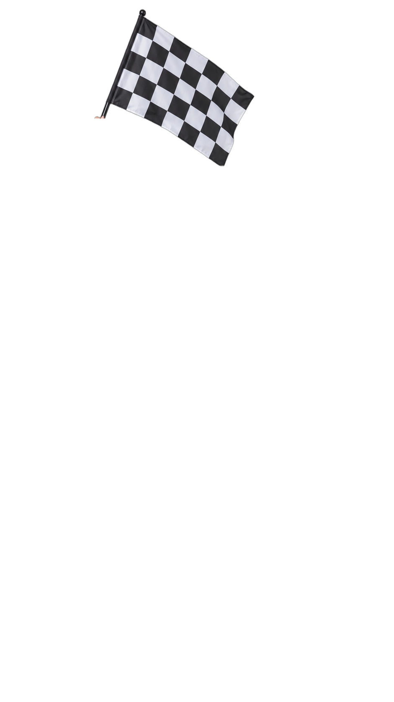

NEW IN STORE
Scuderia Ferrari
Scuderia Ferrari
FZ6002U
Polarized Grey · Matte Black
FZ6002U
MATTE BLACK
POLARIZED GREY
Universal Fit
SQUARE
59-18
NEW IN STORE
Scuderia Ferrari FZ6002U


LAP
00:00.00